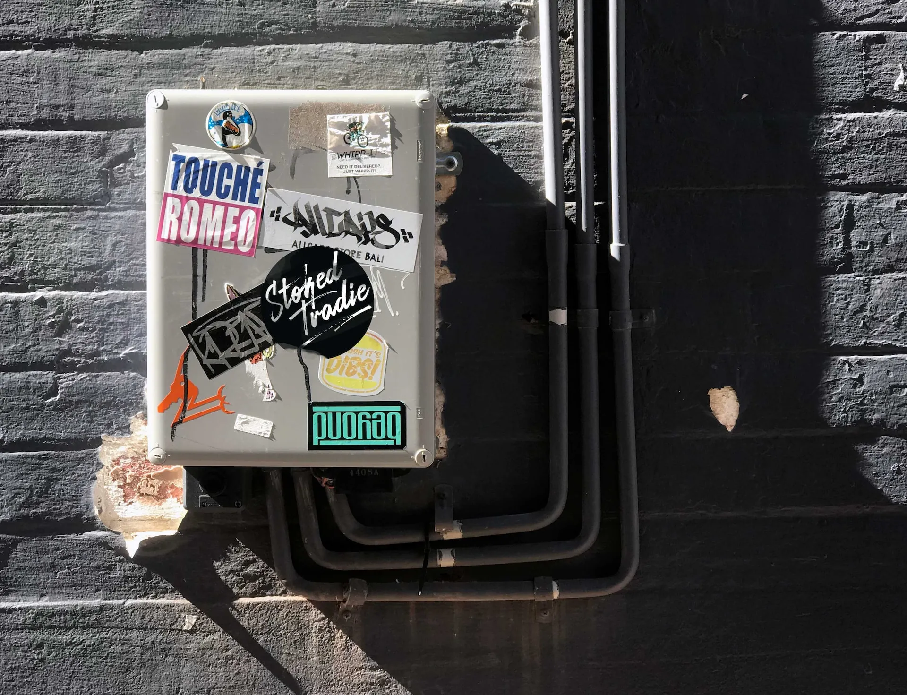

POWDER COATING
Protection and style, with over 25 eye-catching powder coating finishes.
Powder coating is more durable and environmentally-friendly than traditional liquid paint. All of our steel and aluminum products can be painted in a variety of colors to a smooth, textured, matte or metallic finish, and then silk-screened with custom branding. We also provide custom power painting services for your finished products.
METAL ENGRAVING
Our products can be customized with ink-filled engraving to include logos, text and QR codes for personalization, identification and tagging. For products used in harsh environments, this ensures longevity and readability.
SILK-SCREENING
Silk-screening can be used to further personalize painted products. It is a versatile process for applying color-matched graphics to exact specifications for product branding and labelling.
POWDER COATING SERVICES
We offer powder coating services for customer supplied products. Parts are thoroughly cleaned and rinsed before being coated and cured to the desired finish. They are thoroughly inspected and packed to ensure that they arrive at your facility in excellent condition.